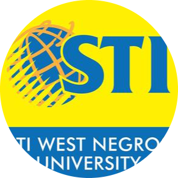

James B. Villacarlos
Front-end Developer | UI/UX Designer
SUMMARY:
Seeking a challenging IT position that utilizes my skills in programming, database management, and network administration to contribute to the success of an organization.
EDUCATION:
 STI - West Negros University Bachelor of Science in Information Technology (Decemeber 2021)
TRAININGS AND SEMINARS:
Complete Web & Mobile Designer in 2023: UI/UX, Figma (Udemy)(August 2023 - Present)
The Complete 2023 Web Development (Udemy) (November 21, 2022-Present)
PHP for Begginers (Udemy) (January 2023-Present)
Data Privacy Protection (DICT) (March 5, 2021)
Web Development Everything You Need to Know (April 26, 2017)
Web Development for Beginners 1(April 24, 2017)
EXPERIENCE:
Administrative Assistant I - Bureau of Immigration
Dec 2022 - June 2023
Dealing with queries, Organizing, Managing and keeping an office running.
Edited documents to improve accuracy of language, flow and readability.
Created presentations to inform, motivate and persuade internal and external audiences.
Executed record filing system to improve document organization and management.
Troubleshoot system and network problems, diagnosing and solving hardware or software faults.
Installing new software and hardware drivers updating existing ones and as needed.
Resolve technical issues in a timely manner using available resources within the company.
Administrative Aide III (Clerk1) - Information Communication Technology Division (ICTD)
Provincial Government of Negros Occidental
Oct 2021 - Dec 2022
Dealing with queries, Organizing, Managing and keeping an office running.
Recorded meeting minutes to provide historical account of actions, measure progress against strategic plan and drive accountability.
Edited documents to improve accuracy of language, flow and readability.
Executed record filing system to improve document organization and management.
Created presentations to inform, motivate and persuade internal and external audiences.
Executed record filing system to improve document organization and management.
Resolve technical issues in a timely manner using available resources within the company.
Troubleshoot system and network problems, diagnosing and solving hardware or software faults.
Installing new software and hardware drivers updating existing ones and as needed.
Resolve technical issues in a timely manner using available resources within the company.